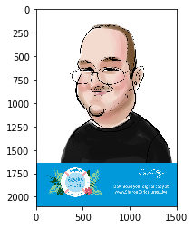
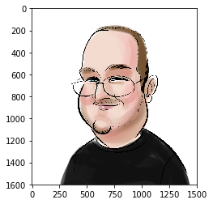

Image Editing with Jupyter
Tue 25 July 2017 by Moshe ZadkaWith the news about MS Paint going away from the default MS install, it might be timely to look at other ways to edit images. The most common edit I need to do is to crop images -- and this is what we will use as an example.
My favorite image editing tool is Jupyter. Jupyter needs some encouragement to be an image editor -- and to easily open images. As is often the case, I have a non-pedagogical, but useful, preamble. The preamble turns Jupyter into an image editor.
from matplotlib.pyplot import imshow
import numpy
import PIL
import os
%matplotlib inline
def inline(some_image):
imshow(numpy.asarray(some_image))
def open(file_name):
return PIL.Image.open(os.path.expanduser(file_name))
With the boring part done, it is time to edit some images! In the Shopkick birthday party, I had my caricature drawn. I love it -- but it has a whole baggage talking about the birthday party which is irrelevant for uploading to Facebook.
I have downloaded the image from the blog.
I use Pillow (the packaging fork of PIL)
to open the image.
a=open("~/Downloads/weeeee.jpg")
Then I want to visually inspect the image inline:
inline(a)
I use the crop method, and directly inline it:
inline(a.crop((0,0,1500,1600)))
If this was longer, and more realistic, this would be playing with the numbers back and forth -- and maybe resize, or combine it with other images.
The Pillow library is great,
and this way we can inspect the results as we are modifying the image,
allowing iterative image editing.
For people like me, without a strong steady artist's hand
to perfectly select the right circle, this solution works just great!